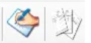

Botones de Control de Documentos y Facturas
Justo después del carrito encontrarás dos botones principales:
- Documentos (Albaranes)
- Facturas

Estos apartados permiten consultar, filtrar y visualizar todos los documentos generados.
EL PRIMERO ES DE DOCUMENTOS (ALBARANES) Y EL SEGUNDO DE FACTURAS.
🔍 ¿Qué se puede hacer aquí?
- Ver y filtrar documentos y facturas ya realizadas.
- Haciendo clic derecho sobre un documento:
- ▶️ Ver factura o Ver documento
- Ver con formato, eligiendo el tipo de formato de impresión
⚠️ Para visualizar documentos en estos apartados, primero es necesario haber creado una venta, compra o movimiento desde el carrito, y haberla facturado.
Cómo hacer una Factura Rectificativa
Selección del albarán
- Entramos en el listado de Documentos (Albaranes).
- Filtramos por la serie correspondiente (ej.: Ventas contado, Facturas simplificadas, etc.).
- Seleccionamos el albarán que queremos rectificar.
🔄 Generar el documento rectificativo
- Hacemos clic derecho sobre el albarán elegido.
- Seleccionamos “Generar documento rectificativo”.
Indicar el motivo
El sistema solicitará que introduzcas el motivo de la rectificación. Es obligatorio rellenarlo de forma clara y correcta (requisito legal).
Facturar el documento rectificativo
- El sistema generará un nuevo documento en color rojo.
- Pulsamos Facturar para emitir la factura rectificativa.
- Una vez facturada, aparecerá en su serie correspondiente.
⚠️ Asegúrate de que el motivo de la rectificación esté correctamente descrito. Comprueba que estás trabajando en la serie correcta para evitar errores de trazabilidad. Una factura rectificativa siempre debe quedar vinculada al documento original.
💡 Tips importantes
- Revisa siempre el tipo de IVA al registrar artículos.
- Para artículos de empresa, el descuento se aplica automáticamente (no modificar manualmente).
- Mantén actualizado el stock desde los albaranes para garantizar que los listados reflejen datos reales.